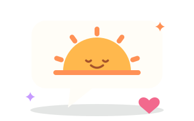

Guides / SayBright
How to start a daily affirmation habit
To start a daily affirmation habit, tie it to something you already do every day, such as right after you wake up or brush your teeth, and say three to five short affirmations out loud at that moment. Pick ones you can believe, keep them in the present tense, and use a reminder and a simple streak so a missed day is easy to notice and easy to restart.

Step by step
- Pick your anchor. Choose one thing you already do daily, like making coffee or brushing your teeth. Your affirmations come right after it.
- Choose three to five affirmations. Start with one area you want more of, such as confidence or calm. Keep them short and believable: "I can handle today one step at a time" lands better than a claim you do not believe yet.
- Say them out loud. Speaking slows you down and makes you notice the words. A whisper counts.
- Set one reminder at your anchor time, for the first few weeks while the habit forms.
- Track a streak. A mark on a calendar or a streak counter in an app makes a missed day visible, so you can start again the next morning instead of drifting off.
- Refresh them every few weeks. When a line stops meaning anything, swap it for a new one.
How to write affirmations you will keep saying
- Present tense: "I am learning to rest" rather than "I will rest more".
- Believable: a small step you can accept today works better than a big claim that makes you argue back.
- Specific: name the thing you care about, such as work, your body, a relationship or money.
- Short: one breath long, so you can say it without reading.
Where to put them so you see them
- Your Lock Screen, where you look dozens of times a day. Our guide shows how to put affirmations on your iPhone Lock Screen.
- A sticky note on the mirror or the coffee machine at your anchor spot.
- A recording in your own voice, to play on a walk or a commute.
- The free affirmation of the day page, which shows a new one every day.
Common mistakes
- Too many at once. Twenty affirmations turn into a chore; three to five said with attention stick.
- No fixed time. "Sometime today" usually means never. Tie it to your anchor.
- Quitting after a missed day. A streak is a tool, not a test. Restart the next morning.
- Lines you do not believe. If one makes you wince, soften it until it feels possible.
Affirmations are a self care habit, not a treatment. If low mood or anxiety gets in the way of daily life, talk to a doctor or a mental health professional.
Make it easier with an app
SayBright is a daily affirmations app for iPhone from Graysmith Labs built around this habit: five free affirmations a day from the topics you choose, a reminder at the time you pick, and streak milestones from 7 to 365 days. You can write your own affirmations for free.
Premium adds every category with no daily limit, widgets that change all day, recordings in your own voice and a streak save for one missed day a week.
Questions
How do I start a daily affirmation habit?
Tie it to something you already do every day, say three to five short, believable affirmations out loud at that moment, and use a reminder and a streak so a missed day is easy to restart.
How many affirmations should I say a day?
Three to five is plenty to start. Saying a few with attention works better than reading a long list.
What is the best time to say affirmations?
Whenever you will actually do it every day. Mornings work well for many people because the day has not filled up yet.
Should I say affirmations out loud?
Out loud is better if you can. It slows you down and makes you notice the words. A whisper or saying them in your head still counts.
How long does it take to form an affirmation habit?
It varies a lot from person to person. Expect a few weeks of reminders before it feels automatic, and do not worry about the odd missed day.
Can I record affirmations in my own voice?
Yes. Your phone's voice memo app works, and SayBright Premium lets you record any affirmation in your own voice and play it back in the app.